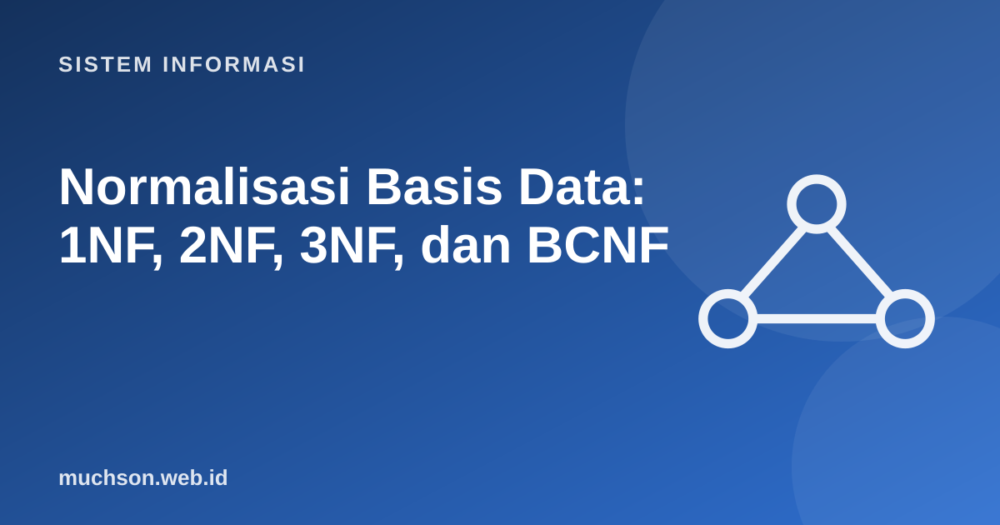

Beranda › Artikel › Sistem Informasi
Sistem InformasiNormalisasi Basis Data: 1NF, 2NF, 3NF, dan BCNF
Normalisasi adalah proses menata tabel agar data tidak berulang dan tidak menimbulkan kesalahan saat diubah. Alih-alih menghafal aturan, kita mulai dari satu tabel berantakan, melihat apa yang rusak, lalu memperbaikinya selangkah demi selangkah.
Sebaiknya sudah paham: ERD dan model relasional

Setelah membaca dan mencoba materi ini, Anda mampu:
- menjelaskan anomali sisip, ubah, dan hapus akibat redundansi
- memahami ketergantungan fungsional (A → B)
- menormalkan tabel dari bentuk tidak normal ke 1NF, 2NF, 3NF
- menjelaskan BCNF dan kapan denormalisasi dipertimbangkan
- memverifikasi hasil dekomposisi dengan SQL
Tabel awal yang bermasalah
Misalkan sebuah kampus mencatat KRS dalam satu tabel besar:
| nim | nama_mhs | kode_mk | nama_mk | sks | dosen | nilai |
|---|---|---|---|---|---|---|
| A01 | Ani | SI101 | Sistem Informasi | 3 | Dr. Rina | A |
| A01 | Ani | SI102 | Basis Data | 3 | Pak Dodi | B |
| A02 | Budi | SI101 | Sistem Informasi | 3 | Dr. Rina | B |
| A02 | Budi | SI103 | Pemrograman | 4 | Bu Eka | A |
Tiga anomali
- Anomali ubah: nama mata kuliah SI101 berubah. Kita harus mengubah di semua baris; bila ada yang terlewat, data tidak konsisten.
- Anomali sisip: mata kuliah baru yang belum diambil siapa pun tidak dapat dicatat, karena nim bagian dari kunci.
- Anomali hapus: bila Budi satu-satunya yang mengambil SI103 lalu KRS-nya dihapus, seluruh informasi mata kuliah itu ikut hilang.
Ketergantungan fungsional
A → B dibaca "A menentukan B": untuk setiap nilai A hanya ada satu nilai B. Di sini kunci tabel adalah (nim, kode_mk). Ketergantungan yang berlaku:
| Ketergantungan | Arti | Jenis |
|---|---|---|
| (nim, kode_mk) → nilai | Nilai ditentukan pasangan mahasiswa dan mata kuliah | Ketergantungan penuh pada kunci |
| nim → nama_mhs | Nama hanya bergantung pada nim | Ketergantungan parsial |
| kode_mk → nama_mk, sks, dosen | Data mata kuliah hanya bergantung pada kode_mk | Ketergantungan parsial |
Bentuk normal pertama (1NF)
Syarat: setiap sel berisi satu nilai atomik dan tidak ada kelompok berulang. Tabel kita sudah 1NF. Contoh yang melanggar: kolom matkul berisi "SI101, SI102" dalam satu sel; solusinya satu baris per pasangan.
Bentuk normal kedua (2NF)
Syarat: 1NF dan tidak ada ketergantungan parsial, yaitu atribut non-kunci harus bergantung pada seluruh kunci, bukan sebagian. Atribut nama_mhs hanya bergantung pada nim, dan data mata kuliah hanya pada kode_mk. Pecah menjadi tiga tabel:
| Tabel | Kolom (PK bergaris bawah secara konsep) | Isi |
|---|---|---|
| mahasiswa | nim (PK), nama_mhs | A01 Ani; A02 Budi |
| mata_kuliah | kode_mk (PK), nama_mk, sks, dosen | SI101..SI103 |
| krs | (nim, kode_mk) (PK), nilai | Empat baris nilai |
Bentuk normal ketiga (3NF)
Syarat: 2NF dan tidak ada ketergantungan transitif, yaitu atribut non-kunci tidak boleh bergantung pada atribut non-kunci lain. Misalkan pada mata_kuliah kita juga menyimpan kantor_dosen yang sebenarnya ditentukan oleh dosen: kode_mk → dosen → kantor_dosen. Kantor dosen berulang pada setiap mata kuliahnya.
import sqlite3
db = sqlite3.connect(":memory:")
db.executescript("""
-- sebelum 3NF: kantor_dosen bergantung pada dosen (transitif)
CREATE TABLE mk_buruk (kode_mk TEXT PRIMARY KEY, nama_mk TEXT, dosen TEXT, kantor_dosen TEXT);
INSERT INTO mk_buruk VALUES
('SI101','Sistem Informasi','Dr. Rina','Gedung A-101'),
('SI104','Analisis Sistem','Dr. Rina','Gedung A-101'),
('SI102','Basis Data','Pak Dodi','Gedung B-203');
-- sesudah 3NF
CREATE TABLE dosen (id_dosen INTEGER PRIMARY KEY, nama TEXT, kantor TEXT);
CREATE TABLE mata_kuliah (kode_mk TEXT PRIMARY KEY, nama_mk TEXT, id_dosen INTEGER REFERENCES dosen(id_dosen));
INSERT INTO dosen VALUES (1,'Dr. Rina','Gedung A-101'),(2,'Pak Dodi','Gedung B-203');
INSERT INTO mata_kuliah VALUES ('SI101','Sistem Informasi',1),('SI104','Analisis Sistem',1),('SI102','Basis Data',2);
""")
# Anomali ubah: Dr. Rina pindah kantor
db.execute("UPDATE mk_buruk SET kantor_dosen='Gedung C-305' WHERE kode_mk='SI101'") # SI104 terlewat!
print("sebelum (tidak konsisten):", db.execute("SELECT DISTINCT dosen, kantor_dosen FROM mk_buruk WHERE dosen='Dr. Rina'").fetchall())
db.execute("UPDATE dosen SET kantor='Gedung C-305' WHERE nama='Dr. Rina'") # satu perubahan cukup
print("sesudah:", db.execute("""SELECT m.kode_mk, d.nama, d.kantor FROM mata_kuliah m JOIN dosen d USING(id_dosen)
WHERE d.nama='Dr. Rina'""").fetchall())sebelum (tidak konsisten): [('Dr. Rina', 'Gedung C-305'), ('Dr. Rina', 'Gedung A-101')]
sesudah: [('SI101', 'Dr. Rina', 'Gedung C-305'), ('SI104', 'Dr. Rina', 'Gedung C-305')]
BCNF: penegasan yang lebih ketat
Pada 3NF, tabel boleh masih memiliki penentu (determinan) yang bukan kunci kandidat dalam situasi tertentu. BCNF (Boyce–Codd) mensyaratkan: setiap determinan harus merupakan kunci kandidat. Contoh klasik: tabel (mahasiswa, mata_kuliah, dosen) dengan aturan "setiap dosen hanya mengajar satu mata kuliah". Maka dosen → mata_kuliah, padahal dosen bukan kunci kandidat. Dekomposisi: (dosen, mata_kuliah) dan (mahasiswa, dosen).
Ucapan mnemonik terkenal: setiap atribut non-kunci harus bergantung pada "kunci, seluruh kunci, dan tidak lain selain kunci" (the key, the whole key, and nothing but the key).
Kapan denormalisasi?
Normalisasi menjaga konsistensi tetapi menambah JOIN. Pada sistem pelaporan dan analitik dengan data besar yang jarang berubah, orang sengaja denormalisasi: menggabungkan tabel atau menyimpan salinan agar kueri cepat. Lakukan dengan sadar, setelah mengukur, dan jaga konsistensi lewat proses yang jelas. Untuk sistem transaksi (OLTP), mulailah dari 3NF.
1. Normalkan tabel pesanan(no_pesanan, tgl, id_pelanggan, nama_pelanggan, kode_produk, nama_produk, harga, jumlah).
2. Mengapa tabel dengan kunci tunggal otomatis memenuhi 2NF jika sudah 1NF?
3. Sebutkan satu alasan denormalisasi.
4. Apa anomali hapus?
- Anomali ubah, sisip, dan hapus muncul dari redundansi.
- 1NF: atomik; 2NF: tanpa ketergantungan parsial; 3NF: tanpa ketergantungan transitif; BCNF: determinan = kunci kandidat.
- Dekomposisi harus tidak kehilangan data (lossless) dan sebaiknya mempertahankan ketergantungan.
- Denormalisasi adalah keputusan sadar untuk performa baca.
Tanya jawab
Apakah ada bentuk normal lebih tinggi dari BCNF?
Bagaimana mengetahui ketergantungan fungsional?
Apakah normalisasi berlaku untuk NoSQL?
Referensi
- Ramez Elmasri dan Shamkant Navathe, Fundamentals of Database Systems (Pearson)
- Abraham Silberschatz, Henry Korth, S. Sudarshan, Database System Concepts (McGraw-Hill)
- E. F. Codd, A Relational Model of Data for Large Shared Data Banks, Communications of the ACM 13(6), 1970
- William Kent, A Simple Guide to Five Normal Forms in Relational Database Theory, CACM 26(2), 1983